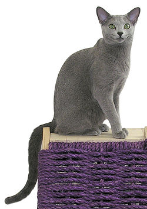

Gatos
El gato doméstico llamado más comunmente gato, es un mamifero carnívoro de la familia Felidae. Es una subespecie domesticada por la convivencia con el ser humano.
El gato se comunica a través de vocalizaciones. Las más populares son su característico maullido y el ronroneo, pero puede aullar, gemir, gruñir y bufar.11 Además, adopta poses o expresiones que informan, a sus congéneres, sus enemigos o sus cuidadores, de su ánimo o sus intenciones.

Algunas de las razas de gatos más comunes son:
- Persa.
- Azul ruso.
- Siamés.
- Angora.
Gato persa.
El Persa es una raza de gato caracterizada por tener una cara ancha y plana y un gran abundante pelaje de variados colores. Son considerados comúnmente como gatos aristocráticos (el 75% de los gatos de pedigree registrados son persas). Los primeros gatos persas fueron introducidos en Italia desde Persia (actualmente Irán, Tayikistán y Afganistán) en la década de 1620 y a sus descendientes se les llamó de muchas maneras.1 La rama persa actual se desarrolló a finales de 1800 en Inglaterra y proviene del gato de Angora turco.2
Gato azul ruso.
El azul ruso es una de las razas de gato doméstico más antiguas y populares del mundo. Es reconocida por todas las organizaciones felinológicas internacionales. Son gatos de tamaño medio y pelo corto plateado, fácilmente distinguibles de otras razas. El azul ruso es famoso por ser un gato inteligente y afectuoso, que disfruta del contacto con los humanos y es ideal para la vida en familia.[cita requerida].
Gato siamés.
El siamés es una raza de gato. Dentro de dicha raza se distinguen dos variedades: por un lado el siamés moderno, y por otro el siamés tradicional o Thai.
Gato angora.
El gato angora o ankara kedisi es una raza de gato doméstico. Los angora son la raza más antigua, originaria de la región de Anatolia en Turquía.
Pese a ello, el término angora ha sido aplicado para designar a cualquier gato de pelo largo, negro y lacio, sin importar su origen o raza. Así, muchos gatos comunes de pelo largo, o incluso mayas sin pedigrí, se denominan "angoras".